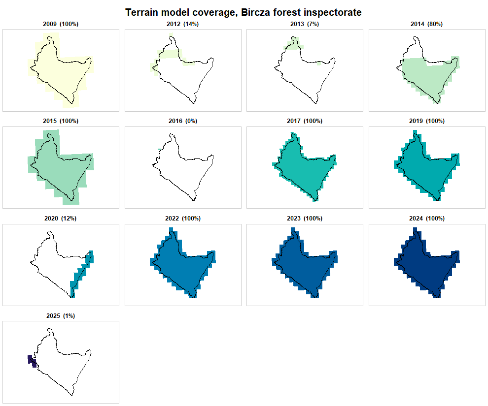
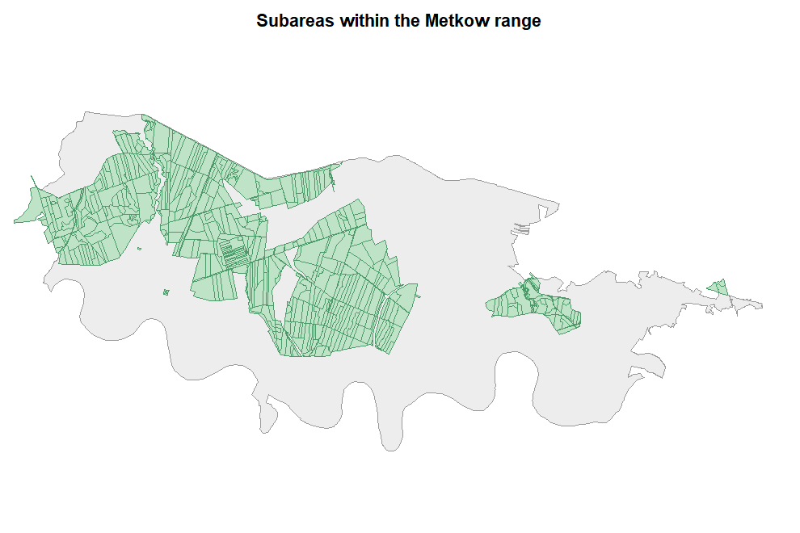

A canopy height model needs a surface model and a terrain model from the same survey, and it needs them over the whole area. Whether that exists is a question about the index, not about the data, and it can be settled before downloading a single tile.
Two forest inspectorates, deliberately different: Bircza in the Carpathian foothills, and Chrzanow in industrial Silesia.
Bircza: rich in flights, poor in usable pairs
bircza <- bdl_unit(inspectorate = "Bircza", quiet = TRUE)
round(sum(as.numeric(sf::st_area(bircza))) / 1e4) # hectares
#> [1] 50350
dem <- dem_request(bircza, quiet = TRUE)
nrow(dem)
#> [1] 2670
table(dem$year, dem$product)
#>
#> DTM DSM PointCloud
#> 2009 120 0 0
#> 2012 46 46 53
#> 2013 22 22 52
#> 2014 190 190 345
#> 2015 40 0 0
#> 2016 1 0 0
#> 2017 417 0 0
#> 2019 136 0 0
#> 2020 20 0 0
#> 2022 129 0 0
#> 2023 129 129 450
#> 2024 129 0 0
#> 2025 4 0 0Eighteen separate laser scanning flights, in four campaigns:
laz <- unique(sf::st_drop_geometry(
dem[dem$product == "PointCloud", c("year", "date", "format", "density",
"avgElevErr", "VRS")]))
laz[order(laz$date), ]
#> <rgeopl index index: 18 tiles>
#> vintages: 2012, 2013, 2014, 2023
#> note: mixed vertical datums (PL-EVRF2007-NH, PL-KRON86-NH)
#> year date format density avgElevErr VRS
#> 4238 2012 2012-11-07 LAS 4 0.15 PL-KRON86-NH
#> 4234 2012 2012-11-10 LAS 4 0.15 PL-KRON86-NH
#> 4729 2012 2012-11-12 LAS 4 0.15 PL-KRON86-NH
#> 4735 2012 2012-11-16 LAS 4 0.15 PL-KRON86-NH
#> 4235 2012 2012-11-17 LAS 4 0.15 PL-KRON86-NH
#> 4876 2012 2012-11-28 LAS 4 0.15 PL-KRON86-NH
#> 3137 2013 2013-04-24 LAS 4 0.15 PL-KRON86-NH
#> 3096 2013 2013-05-09 LAS 4 0.15 PL-KRON86-NH
#> 2151 2014 2014-03-21 LAS 4 0.15 PL-KRON86-NH
#> 2153 2014 2014-03-28 LAS 4 0.15 PL-KRON86-NH
#> 2152 2014 2014-03-29 LAS 4 0.15 PL-KRON86-NH
#> 2175 2014 2014-03-30 LAS 4 0.15 PL-KRON86-NH
#> 446 2023 2023-04-18 LAZ 4 0.15 PL-EVRF2007-NH
#> 27 2023 2023-04-23 LAZ 4 0.15 PL-EVRF2007-NH
#> 1 2023 2023-04-24 LAZ 4 0.15 PL-EVRF2007-NH
#> 647 2023 2023-04-28 LAZ 4 0.15 PL-EVRF2007-NH
#> 762 2023 2023-04-29 LAZ 4 0.15 PL-EVRF2007-NH
#> 742 2023 2023-05-09 LAZ 4 0.15 PL-EVRF2007-NHAll at 4 points per square metre. But the flights are what was surveyed, not what was published as a surface model, and that is where it falls apart:
coverage(dem[dem$product == "DSM", ], aoi = bircza)
#> year tiles area_km2 aoi_share
#> 1 2012 46 120.14 0.136
#> 2 2013 22 57.39 0.066
#> 3 2014 190 497.24 0.799
#> 4 2023 129 674.77 1.000Only 2023 covers the inspectorate. The 2012-2014 campaign was flown in patches.
plot_coverage(dem[dem$product == "DTM", ], by = "year", aoi = bircza,
main = "Terrain model coverage, Bircza forest inspectorate")
plot of chunk bircza-dtm
Do the early patches at least add up? Union them and measure:
old <- dem[dem$product == "DSM" & dem$year %in% c(2012, 2013, 2014), ]
g <- sf::st_make_valid(sf::st_union(aoi_geom(as_aoi(bircza))))
u <- sf::st_make_valid(sf::st_union(sf::st_geometry(old)))
covered <- suppressWarnings(sf::st_intersection(u, g))
round(100 * as.numeric(sum(sf::st_area(covered))) / as.numeric(sf::st_area(g)), 1)
#> [1] 100They do – but from three campaigns across three years, which means three different states of the stand on one mosaic. For a single-date canopy model over the whole inspectorate there is exactly one option, 2023.
Zoom in and it improves. A single forest range often sits inside one flight:
turnica <- bdl_unit(inspectorate = "Bircza", range = "Turnica", quiet = TRUE)
dem_t <- dem_request(turnica, quiet = TRUE)
coverage(dem_t[dem_t$product == "DSM", ], aoi = turnica)
#> year tiles area_km2 aoi_share
#> 1 2014 16 41.88 1
#> 2 2023 8 41.88 1Two complete epochs, nine years apart. That is a usable pair.
Chrzanow: the opposite problem
metkow <- bdl_unit(inspectorate = "Chrzanow", range = "Metkow", quiet = TRUE)
dem_m <- dem_request(metkow, quiet = TRUE)
unique(sf::st_drop_geometry(
dem_m[dem_m$product == "PointCloud",
c("year", "date", "format", "density", "avgElevErr", "VRS")]))
#> <rgeopl index index: 5 tiles>
#> vintages: 2012, 2022, 2023, 2024
#> note: mixed vertical datums (PL-EVRF2007-NH, PL-KRON86-NH)
#> year date format density avgElevErr VRS
#> 1 2024 2024-05-01 LAZ 12 0.04 PL-EVRF2007-NH
#> 52 2023 2023-03-19 LAZ 4 0.15 PL-EVRF2007-NH
#> 157 2022 2022-04-13 LAZ 12 0.10 PL-EVRF2007-NH
#> 336 2012 2012-03-16 LAS 4 0.15 PL-KRON86-NH
#> 366 2012 2012-10-15 LAS 4 0.15 PL-KRON86-NHDenser clouds, better vertical accuracy, five acquisitions. And yet:
coverage(dem_m[dem_m$product == "DSM", ], aoi = metkow)
#> year tiles area_km2 aoi_share
#> 1 2012 40 103.58 1.000
#> 2 2022 4 20.71 0.193
#> 3 2023 19 98.40 0.998
#> 4 2024 4 20.71 0.193The two best years, 2022 and 2024, publish a surface model over a fifth of the range. The usable pairs are 2012 and 2023 – the older, coarser ones.
The lesson generalises: point cloud density and flight recency say nothing about whether a canopy model is possible. Surface model coverage is the binding constraint, and it is a different column.
Turning the question into a function
chm_epochs <- function(aoi, min_share = 0.999) {
dem <- dem_request(aoi, quiet = TRUE)
dsm <- coverage(dem[dem$product == "DSM", ], aoi = aoi)
dtm <- coverage(dem[dem$product == "DTM", ], aoi = aoi)
full <- intersect(dsm$year[dsm$aoi_share >= min_share],
dtm$year[dtm$aoi_share >= min_share])
vrs <- tapply(dem$VRS, dem$year, function(z) paste(unique(z), collapse = "/"))
data.frame(year = full, datum = unname(vrs[as.character(full)]))
}
chm_epochs(turnica)
#> year datum
#> 1 2014 PL-KRON86-NH
#> 2 2023 PL-EVRF2007-NH
chm_epochs(metkow)
#> year datum
#> 1 2012 PL-KRON86-NHMetkow comes back with one epoch, not the two the coverage table above suggested, and the reason is worth pausing on: its 2023 surface model covers 99.8% of the range, and the default threshold is 99.9%. That is a decision, not a fact – a two-per-mille gap at the edge of a range may be irrelevant, or it may be exactly the part you care about. Make it explicitly:
chm_epochs(metkow, min_share = 0.99)
#> year datum
#> 1 2012 PL-KRON86-NH
#> 2 2023 PL-EVRF2007-NHThe datum column matters for the comparison, not for the model: a canopy height model is a difference within one year, so the vertical datum cancels. Comparing two terrain models across the 2019 switch would not be so forgiving.
What the forest is, while we are here
subareas <- bdl_subareas(metkow, quiet = TRUE)
d <- sf::st_drop_geometry(subareas)
sp <- aggregate(area_ha ~ species, data = d[!is.na(d$species), ], FUN = sum)
head(sp[order(-sp$area_ha), ], 5)
#> species area_ha
#> 10 SO 1273.60
#> 2 BRZ 94.83
#> 1 BK 77.12
#> 7 OL 27.78
#> 3 DB 15.49
round(sum(d$area_ha, na.rm = TRUE)) # stand area, ha
#> [1] 1586
round(sum(as.numeric(sf::st_area(metkow))) / 1e4) # range territory, ha
#> [1] 4609A forest range’s polygon is administrative territory, not forest. Metkow holds 1586 ha of subareas inside 4609 ha of territory; reading the polygon area as forest area would overstate it threefold.
plot_units(subareas, label = NA, context = metkow, fill = "#bfe3c6",
border = "#4c9a6a", main = "Subareas within the Metkow range")
plot of chunk metkow-subareas
Summary
| Bircza inspectorate | Turnica range | Metkow range | |
|---|---|---|---|
| area | 50 350 ha | 1 197 ha | 4 609 ha |
| ALS flights | 18 | 4 | 5 |
| best density | 4 p/m² | 4 p/m² | 12 p/m² |
| CHM epochs at 99.9% | 2023 | 2014, 2023 | 2012 |
| CHM epochs at 99% | 2023 | 2014, 2023 | 2012, 2023 |
Three areas, three answers, and in none of them was the answer the newest or the densest flight. Metkow’s densest surveys, 2022 and 2024 at 12 points per square metre, are the two that cannot be used at all: their surface models cover a fifth of the range. That is the case for asking the index first.